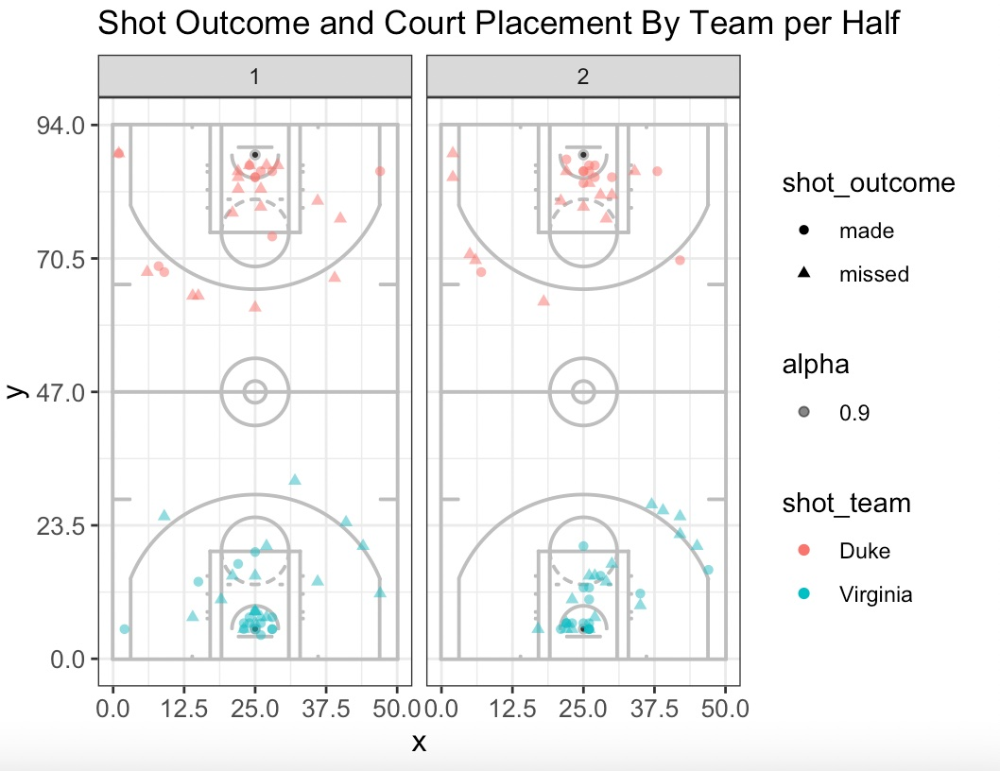
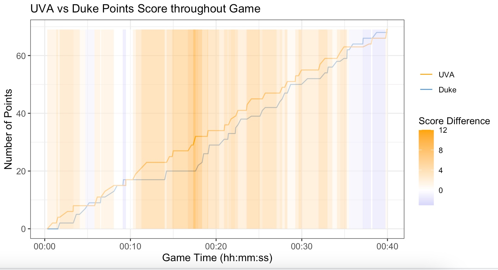

Visualizations with R
Scatterplot 1:
 The purpose of this visualization is to empasize the relationship between shot placement on the court and whether the shot was made for each team for each half of the game. For both teams, majority of shots were made inside the 3 point line.
Temporal Plot 2: Visualizing Score Difference over Game between UVA and Duke
 The line plot visualizes the game score throught the game, while the temporal plot is used to show the score difference throughout the game. For example, this highlights how UVA at one point had a very strong and overall consistent lead, however, Duke came back slowly and turned the game around in their favor at the very end.
Access Code